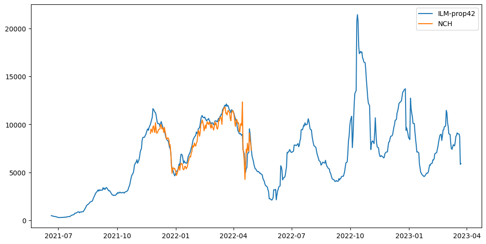

from matplotlib import pyplot as plt
from tqdm.notebook import tqdmData
Load data from NCH
import pandas as pd
def forecast_long_to_wide(df: pd.DataFrame) -> pd.DataFrame:
# Quantile column mapping
col_map = {
0.025: "2.5 %",
0.1: "10.0 %",
0.25: "25.0 %",
0.5: "50.0 %",
0.75: "75.0 %",
0.9: "90.0 %",
0.975: "97.5 %",
}
# Pivot quantile rows
q = df[df["type"] == "quantile"].copy()
q["quantile"] = pd.to_numeric(q["quantile"])
piv = (
q[q["quantile"].isin(col_map)]
.pivot(index="forecast_date", columns="quantile", values="value")
.rename(columns=col_map)
)
# Add mean and sd (if present)
res = piv.copy()
for name in ["mean", "sd"]:
m = (
df[df["type"] == name][["forecast_date", "value"]]
.drop_duplicates()
.set_index("forecast_date")
.rename(columns={"value": name})
)
res = res.join(m)
# Set final column order and output
cols = [
"mean",
"sd",
"2.5 %",
"10.0 %",
"25.0 %",
"50.0 %",
"75.0 %",
"90.0 %",
"97.5 %",
]
out = res[cols].reset_index().rename(columns={"forecast_date": "date"})
return outimport os
from pathlib import Path
import shutil
import subprocess
import pandas as pd
# Define repository and local clone directory
repo_url = "https://github.com/KITmetricslab/hospitalization-nowcast-hub.git"
clone_dir = Path("/tmp/hospitalization-nowcast-hub")
def read_nch_model_submissions(model_dir: str) -> pd.DataFrame:
csv_dir_path = clone_dir / model_dir
csv_files = [
csv_dir_path / file
for file in os.listdir(csv_dir_path)
if file.endswith(".csv")
]
dfs = [
pd.read_csv(file_path).assign(filename=file_path.name)
for file_path in csv_files
]
combined_df = pd.concat(dfs, ignore_index=True)
query_string = "".join(
"""
age_group == "00+" and target == "0 day ahead inc hosp" and location == "DE"
""".split(
"\n"
)
)
wide_df = forecast_long_to_wide(
combined_df.query(query_string)[["forecast_date", "type", "quantile", "value"]]
)
wide_df["date"] = pd.to_datetime(wide_df["date"], format="%Y-%m-%d").dt.date
return wide_df
if not clone_dir.exists():
subprocess.run(
["git", "clone", "--depth", "1", repo_url, str(clone_dir)], check=True
)
ilm_prop42_df = read_nch_model_submissions("data-processed_updated_models/ILM-prop42")
nch_ensemble_df = read_nch_model_submissions(
"data-processed_updated_models/NowcastHub-MeanEnsemble40"
)plt.figure(figsize=(12, 6))
plt.plot(ilm_prop42_df["date"], ilm_prop42_df["mean"], label="ILM-prop42")
plt.plot(nch_ensemble_df["date"], nch_ensemble_df["mean"], label="NCH")
plt.legend()
plt.show()
from pyprojroot import here
ilm_prop42_df.to_csv(
here("data/results/4_hospitalizations/nowcast/ilm_prop42.csv"), index=False
)
nch_ensemble_df.to_csv(
here("data/results/4_hospitalizations/nowcast/nch_ensemble.csv"), index=False
)